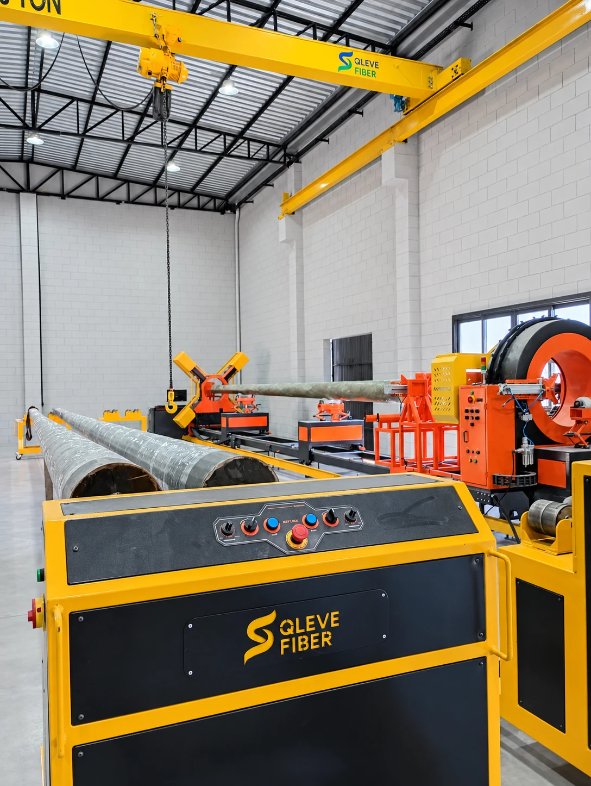
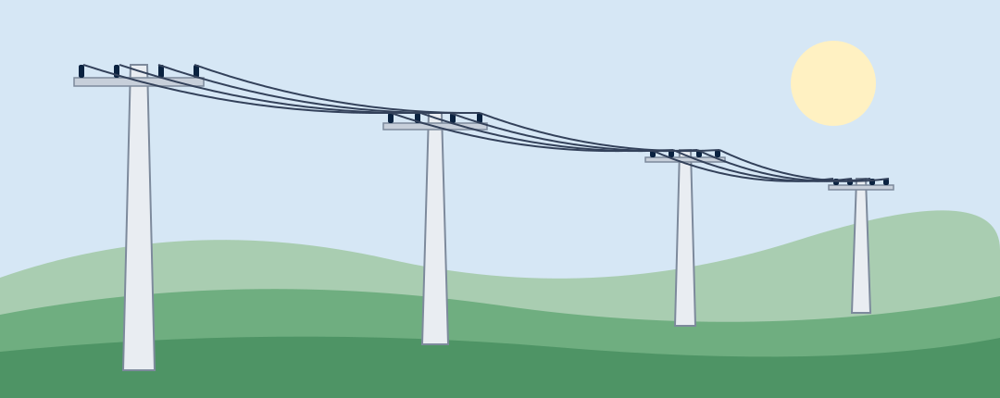
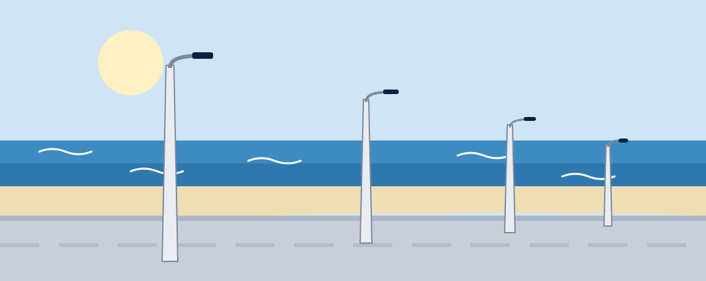
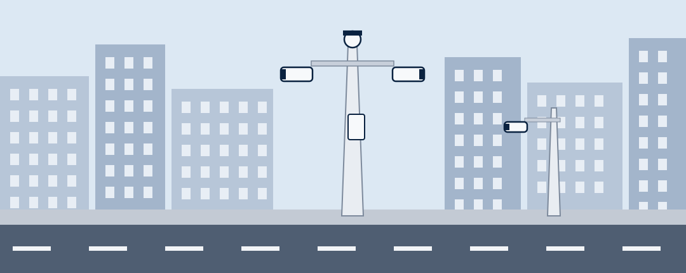
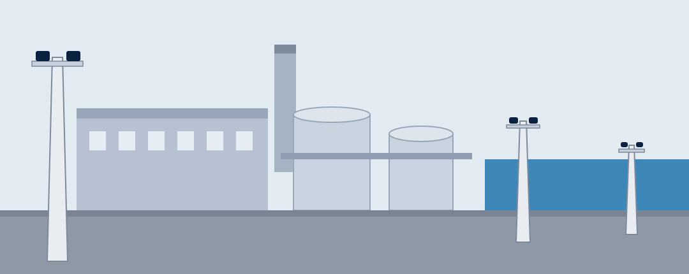
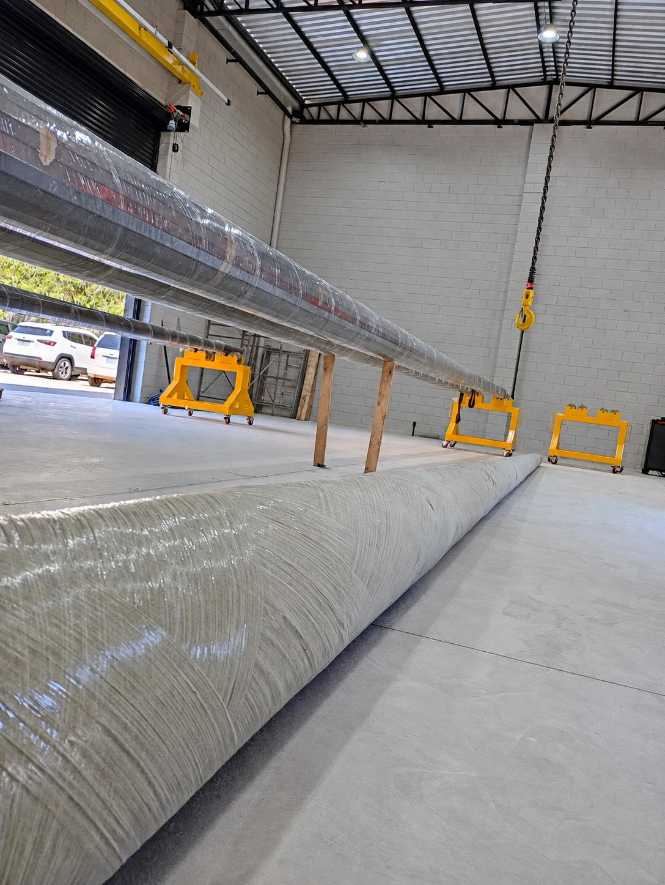

Compósitos para o que precisa durar.
Fabricamos postes em plástico reforçado com fibra de vidro (PRFV) por enrolamento filamentar, conforme a ABNT NBR 16989:2021. Para distribuição de energia, iluminação, conectividade e ambientes agressivos, no Brasil e no exterior.

- Conforme ABNT NBR 16989:2021
- Fábrica em Cachoeirinha/RS
- Atendimento nacional e internacional
Uma linha de postes para cada aplicação
Quatro frentes de atendimento, com modelos e especificações pensados para o tipo de rede, carga e ambiente de cada cliente.

Redes de distribuição de energia
Distribuidoras, cooperativas e empreiteiras que constroem e mantêm redes.

Iluminação pública e condomínios
Concessões de iluminação, loteamentos, prefeituras, condomínios e orlas.

CFTV, conectividade e cidades inteligentes
Videomonitoramento, cercamento eletrônico e conectividade urbana.

Indústria, litoral e infraestrutura
Pátios, portos, saneamento, plantas químicas e acessos rodoviários.
Poliéster reforçado com fibra de vidro: leve, forte e durável
O plástico reforçado com fibra de vidro une resistência mecânica e estabilidade em ambientes onde madeira, aço e concreto sofrem com o tempo.
Leveza
Transporte com mais peças por carga e instalação com equipamento menor.
Resistência mecânica
Projetado para as cargas nominais da ABNT NBR 16989.
Imune à corrosão
Não enferruja nem trinca por corrosão de armadura, inclusive em litoral e indústria.
Isolante elétrico
Material não condutor, que aumenta a segurança de equipes e pessoas.
Baixa manutenção
Dispensa pintura anticorrosiva e reparos de concreto.
Vida útil longa
Resistente a UV e intempéries. Vida útil estimada: a preencher
Estrutura para atender contratos de escala
Enrolamento filamentar com controle por lote
A fibra de vidro impregnada em resina poliéster é enrolada sobre um mandril em máquina CNC, com parâmetros definidos pela engenharia e liberação da Qualidade antes de cada produção.
- Laudo e corpo de prova da resina a cada lote
- Rastreabilidade de cada poste até o lote de produção
- Bloqueio de material não conforme
Preparação
Ordem de produção e preparação do mandril.
Setup
Roving de fibra de vidro e programa CNC.
Enrolamento
Resina poliéster e reforço na base.
Acabamento
Cura, destacamento, corte e furação.
Produção própria em Cachoeirinha/RS
Linha de enrolamento filamentar com comando numérico, ponte rolante e controle por lote, dimensionada para 480 postes por mês em um turno.



Ser referência em soluções estruturais de compósito para energia, cidades, indústria e infraestrutura.
Postes hoje. Vergalhões em seguida. Perfis e estruturas no horizonte.
Postes em PRFV
Linhas PFC, PFQ e PU para energia, iluminação, monitoramento e indústria.
Leve no peso. Forte na estrutura.Vergalhões em PRFV
Armadura não metálica para estruturas de concreto.
Concreto armado sem corrosão.Perfis e estruturas
Perfis em compósito para aplicações industriais e de infraestrutura.
Tem um projeto ou uma licitação em andamento?
Informe aplicação, comprimento e carga, topo e acessórios, quantidade e prazo, e local de entrega. Retornamos com a especificação e a proposta.